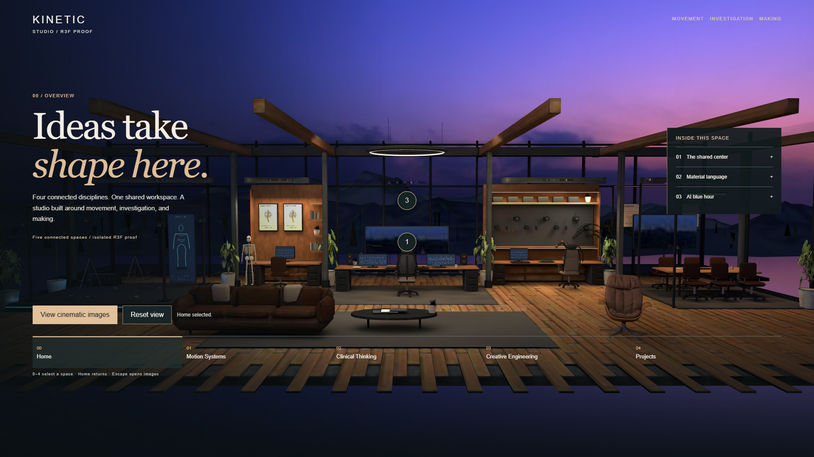
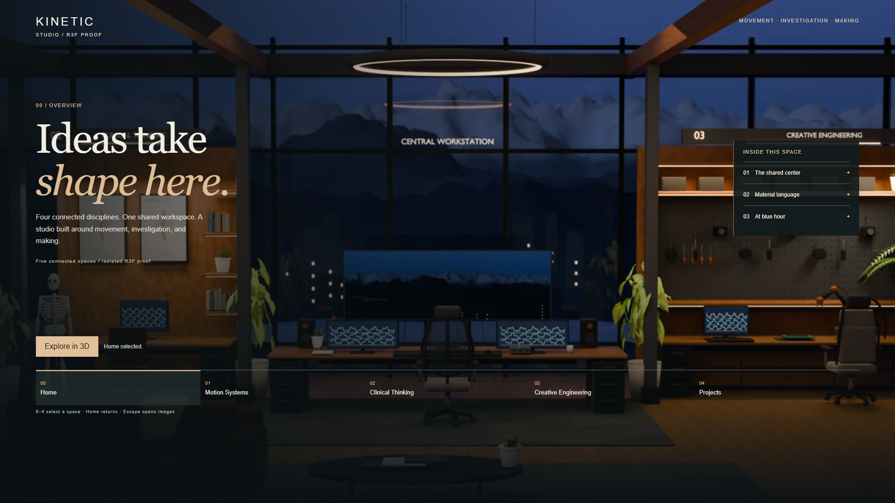
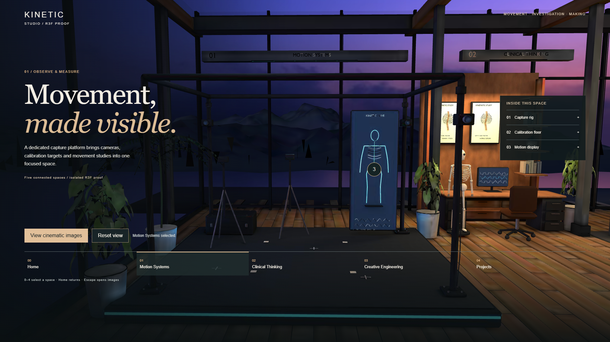
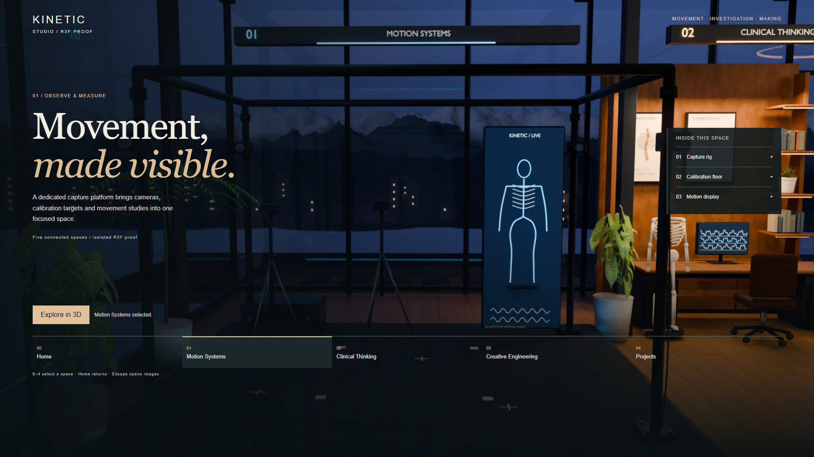
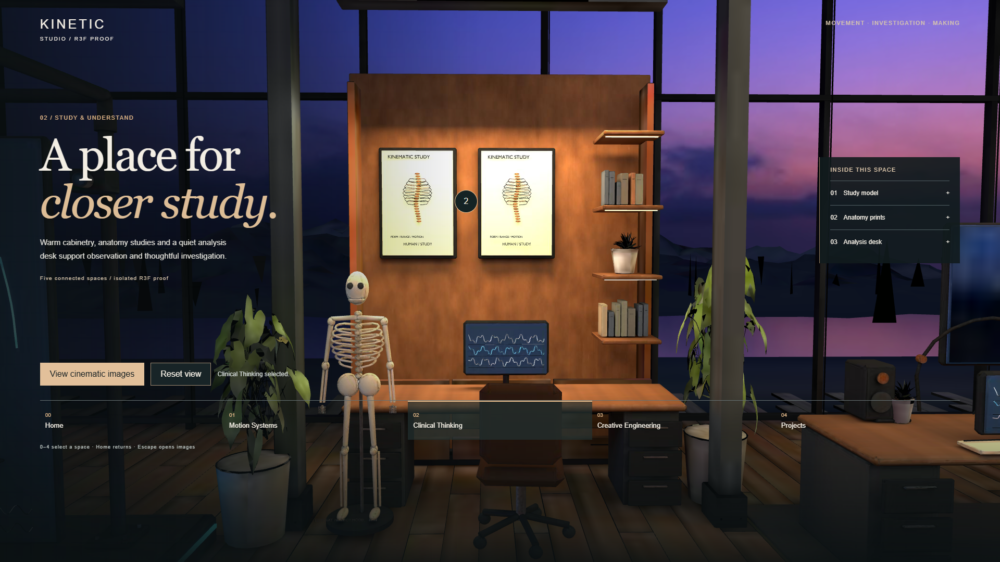
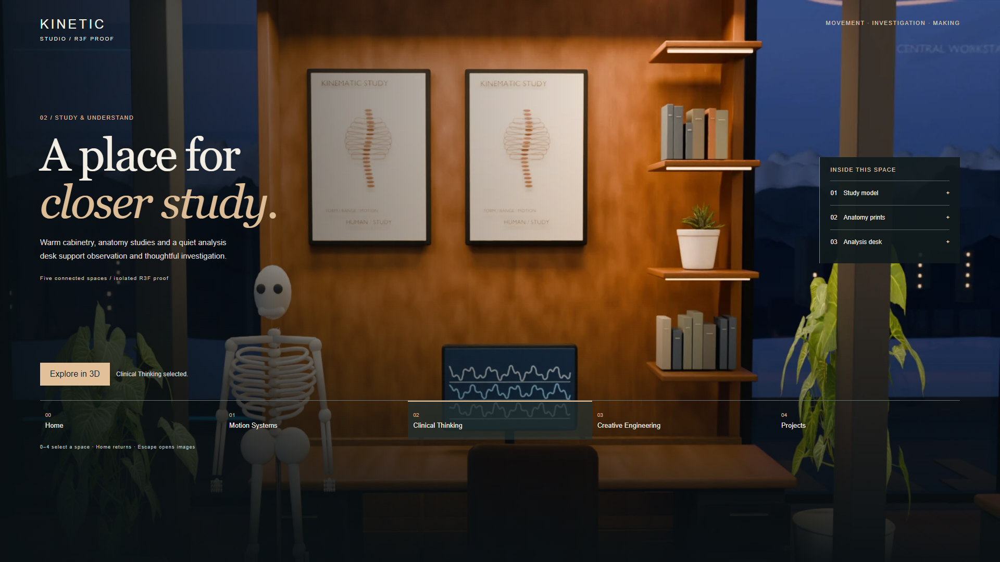
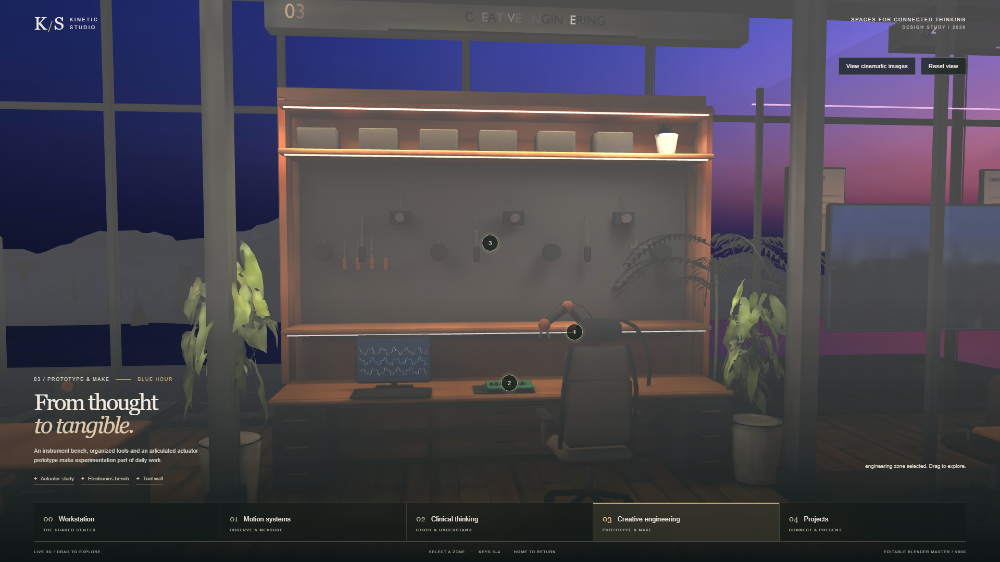
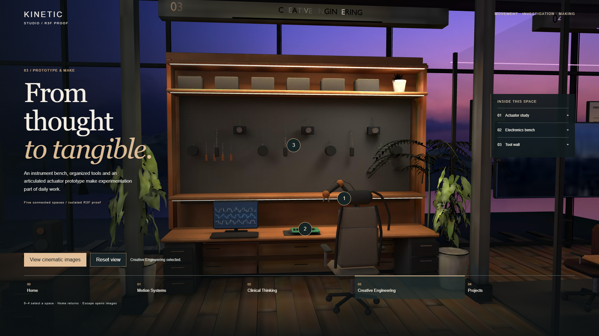
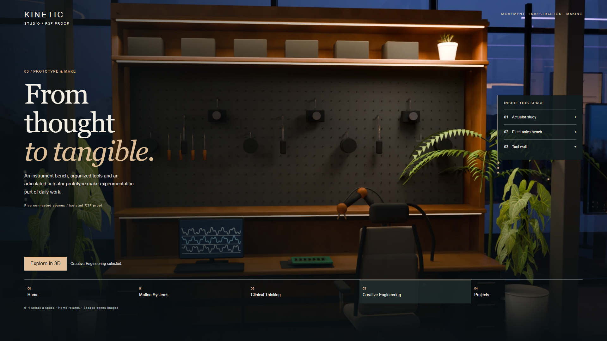
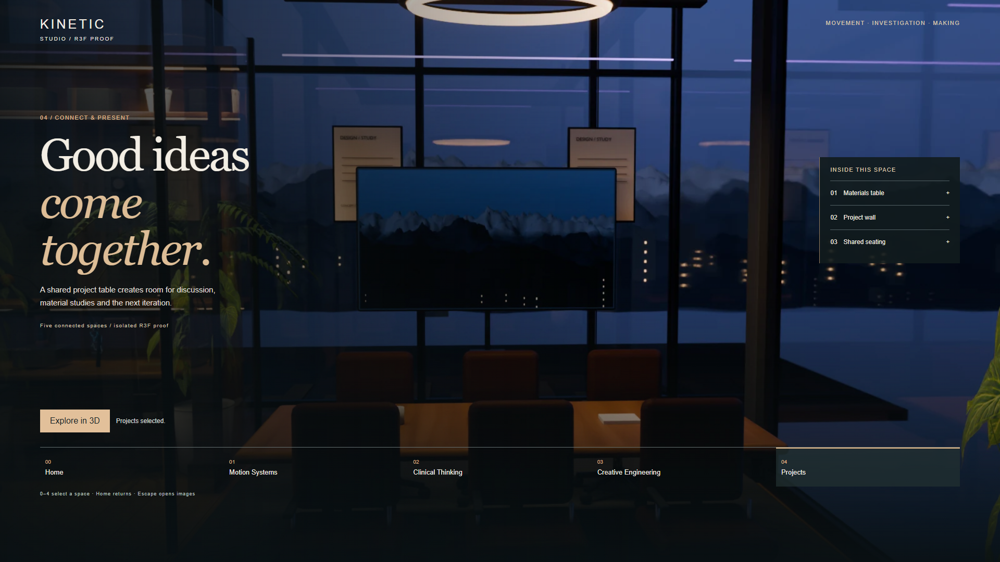

Home



1920×1080, exact original cameras. Click full captures. PlayCanvas remains authoritative. GLB views have baked/simple geometry and differ from Cycles; this is not photoreal acceptance.














Emulated mobile: image-first, lighter GLB. No physical-phone test.